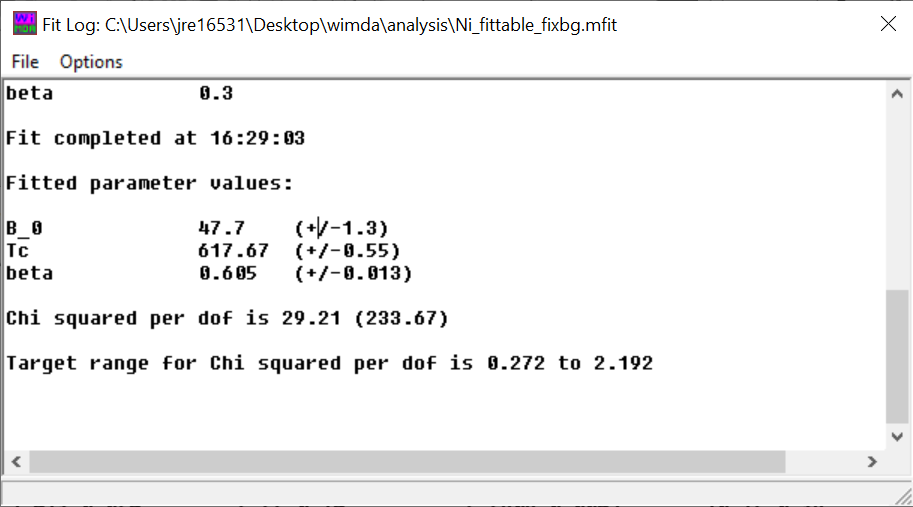
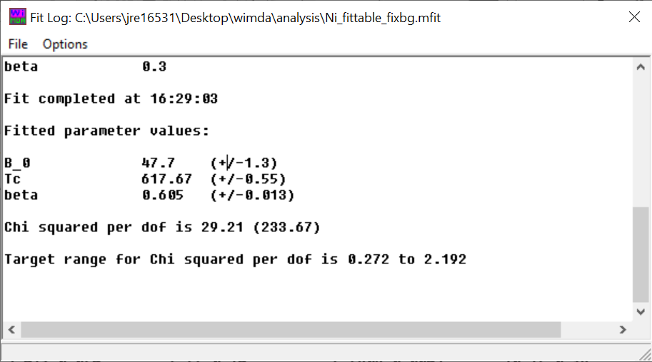

Data Analysis Tutorial : Ni
This tutorial will take you through the analysis of Nickel, a ferromagnet
with a transition temperature of around 620 K. Data can be dowloaded
from here. Decompress this
in a convenient location on your PC.
Opening the data
To open the data, on the WiMDA main menu click ‘File’ then ‘Open’
{kind=link}
Next, click ‘Browse’ and locate the data on your computer. Select any one of the .nxs files in the folder and click ‘Load’. This will load the data into the program, and several windows will open.
Creating a logbook
When you have a few data files, it is a good idea to view a summary of what data the files contain. This can be done in WiMDA by creating a logbook: To create one, on the WiMDA main menu, click ‘Logbook’. This will bring up a window which looks like the following:
{kind=link}
In the ‘From run’ and ‘To run’ text boxes, type in the lowest and highest run numbers you are interested in: for our data, this is from 35560 to 35579. Type these numbers in and click ‘Load’. The run headers will now be visible:
{kind=link}
The order of these headers are run number, comment, temperature, applied field, start date and time, statistics, aux log 1, aux log 2, slits. (the aux logs can be defined at the top; we will not be using these for this tutorial).
You can see from this that there is a run with a 20 G applied field (number 35560, which is a transverse field calibration run), then zero field runs cooling down from 650 K to 600 K, then warming from 580 K to 598 K. Comments can be written in this window above and below the run header lines, and the file can be saved using the ‘Save’ button at the top.
Grouping and Calibrating
Now we know that run 35560 is the TF20 calibration run, we should open this one first. In the WiMDA main menu type 35560 in the text box and click ‘Load’. This will show the data in the plot window, but the axis limits will need to be changed to show the oscillations – go to the plot parameters window, and change the axis scale so that the oscillations are visible (unticking autoscale X+Y, setting X maximum to 10 and autoscaling Y are good options). You should end up with a plot which looks like this:
{kind=link}
The data still doesn’t look quite right – the asymmetry starts at -20%! This is because the grouping needs to be changed: go to the grouping window, and make the forward group 2 and the backward group 1 (click on the plot to update it). While we’re here, as we’re dealing with ISIS data we should add on a deadtime correction - do this in the same window by going to the ‘deadtime correction’ section and clicking ‘Auto Load’. This will apply a deadtime correction of 9.29 ns, a value which was measured at the start of the cycle and stored in each data file.
Now we can calibrate our data. Under ‘Alpha Estimation’, click ‘Estimate’. This should change the alpha box to 1.042, which is reasonable (you should normally expect alpha to be between around 0.5 and 1.5; you should double-check the grouping and the run details if you get a value which is hugely different). Your grouping window should now look like this:
{kind=link}
And your plot should look like this:
{kind=link}
At this stage, we should check that the binning is appropriate – if the data is binned too much, we will struggle to resolve the low temperature data which has the largest muon precession frequency. On the WiMDA main menu, use the ‘LOAD >>’ and ‘<< LOAD’ buttons to look at each of the runs. You should find that for some of the runs we get a zig-zag pattern at short times, with an amplitude that decays after about 2 µs. For example, at 582 K (run 35571), the data looks like this:
{kind=link}
It looks like there are oscillations before 2 µs, but they are not resolved very well! Reducing the binning should help us to resolve this better. Go the the Grouping window, and reduce ‘Bunch factor’ to 1. After clicking on the plot, you should find that the oscillations are now resolved much better (it’s also a good idea to change the x limits again on the Plot Parameters window to show the oscillations more clearly. You should end up with data which looks like this:
{kind=link}
Hint
If you cannot find a window, you can bring it up again using the WiMDA main menu.
We are now ready to start fitting!
Fitting the data
On the WiMDA main menu, click ‘Analyse’. This will bring up the analysis window which is used to define a fit function for the data:
{kind=link}
As we can see a clear oscillation in the data (which should be expected, as Ni is magnetically ordered at this temperature), we can try fitting this data to the function
where the first term takes into account muons stopped in the sample and precessing due to the magnetic ordering, and the second term takes into account muons which have stopped in the sample holder and relax more slowly. We can set this function up by changing the ‘Oscillation’ box under ‘Component 1’ to ‘Rotation Freq.’, and ensuring that the relaxation of this component is set to ‘Lorentzian’.
Hint
Clicking the name of the fit function will bring up a dialog with further details of the function.
We should also help the fitting algorithm out by giving some good initial guesses of the values. Looking at the data, the baseline asymmetry looks like it’s about 5 %, and the relaxing asymmetry is about 4 %. The precession frequency looks like its about 7 MHz, the phase looks about zero, and then the relaxation rate is about 0.5 µs-1. We expect the baseline relaxation to be very slow, so lets put 0.01 µs-1, so we can keep that how it is.
For now, lets let everything vary and see how we get on – so untick all the ‘fix’ checkboxes next to the variables we’ve changed. Your analysis window should now look like this:
{kind=link}
We can see how closely our fit function matches the data by clicking ‘Plot’. It’s not too bad, so click ‘Fit’ and see what happens. The fit log window should open, which tells you information about the fit:
{kind=link}
The values in the analysis window will also be updated with the fitted values of each parameter. From this, it looks like we did well – our \(\chi^2\) per d.o.f. is 1.026! But look at the results closely: we have a negative relaxing asymmetry, which doesn’t make much sense. This is because the sign of the relaxing asymmetry and the phase of the cosine term playoff with each other (because \(A\cos(\theta+180^\circ)=-Acos(\theta)\)), which we need to fix. On the analysis window, change the phase of the oscillating component back to zero, and make the relaxing asymmetry positive and click fit again. The fit log window should now look like this:
{kind=link}
You can also see how good the fit is by checking the color of the text at the bottom left of the Analyse window – as this is green, we’re good to go!
Creating and populating a fit table
We should now create a fit table so that we can compare the different fits from each of the temperature points. On the analyse window, click ‘Add to fit table’. This will first open a save dialog for you to choose where to save it, and once this is done you will be greeted with a window which looks like the following:
{kind=link}
The symbol ‘!’ is used to denote a comment line, which will be ignored when we use this table later to fit a model to the results.
Warning
Do not delete the column heading lines: doing so may result in a ‘Range check error’
Let’s now fit more data points and add them to the fit table – use the Logbook to identify the run numbers to load to increase the temperature, and use the analyse window to fit each one, adding the result to the fit table each time (the oscillations disappear above 610 K, so do not fit these for now). Your fit table should look like this:
{kind=link}
Refining a fit
Now take a look closely at the results – it looks like the baseline lambda (\(\lambda_\mathrm{bg}\)) doesn’t change much as a function of temperature, so it might be worth fixing. We can find the average of all these values by going to Tools then ‘Column Ave’. Use the up and down arrows to go to column 15, and this should show an average value of 0.0272(38) µs-1.
Lets now do the fitting again, with the baseline lambda fixed. Load the data corresponding to a temperature of 582 K (use the Logbook to find the run number), and set the initial values of the fit parameters to appropriate values. Change the ‘baseline lambda’ to 0.0272 (from the average of the fit table) and fix it by checking tickbox next to it.
Hint
You can load all the parameters of a previous fit by clicking ‘Load’ in the Analyse window, and opening file called <run_number>.fit.
Now click ‘Fit’, and if you’re happy with the result, create a new fit table (go to the fit table window, click ‘File’ then ‘New’) and add this fit ot the table. Now fit the rest of the dataset by loading the data for increasing temperature, adding to the fit table each time. Your final fit table should look like the following:
{kind=link}
Note
Note that for the run at 580K, the frequency seems to go down and the relaxing amplitude drops. This is due to the precession time being too close to the incoming muon pulse width, leading to a reduction in precession amplitude and a characteristic phase shift.
Fitting a model to the data
Now we have successfully fitted the data, we can now try fitting a model to the fitting results to learn what’s going on inside the material. On the WiMDA main menu, click ‘Model’. Two new windows should open: one called ‘Model’, and another called ‘Model Plot’.
Lets start off by plotting the muon precession frequency vs temperature. On the ‘Model’ window, change the ‘X-Ordinate’ and ‘Y-Ordinate’ column boxes to the columns in the fit table (columns 4 and 9 respectively), and set the error of the ‘Y-Ordinate’ to ‘Column’ set this to the column in the fit table corresponding to the errors on the frequency (column 10). Now, in the ‘Model Plot’ window, click ‘Plot’. A QGLE window should open, plotting the fitted precession frequency against temperature. Use the relevant boxes in the ‘Model Plot’ window to add labels to the x and y axis. The result should look like this:
{kind=link}
Note
If you are using WiMDA on Mac/Linux, QGLE might not run when you click ‘Plot’. Check out the Troubleshooting page if this happens. TODO: write troubleshooting page
You might notice the anomalous point at 600K: If you look closely at the logbook, you will notice that this only had 5MEv of data compared to nearly 20 for the other points, so this can safely be ignored – this can be done by putting an exclamation mark at the start of the relevant line in the fit table.
Now, in the ‘Model’ window, under ‘Fitting Model’ change the ‘Model’ to ‘Internal field vs T for ordered magnet’. This is the phenomenological function
which models both the low-temperature regime (using the \(\alpha\) exponent) and the critical regime (using the \(\beta\) critical exponent). We would normally expect \(\alpha\) to be around 1–3 (from Bloch’s theory of spin waves) and \(\beta\) to be around 0.3 (from the theory of the critical behaviour of magnets). As we have no low-temperature data (the lowest temperature we deal with is 580K!), in an attempt to stop the fitting parameters playing off with each other we can try fixing \(\alpha=1\), as this will have a very small effect on the behaviour in the critical regime. Set the initial value of \(\beta=0.3\) and \(B_0=50\)MHz (as a rough guess, extrapolating from the data we have), \(T_\mathrm{c}=620\)K and fix \(B_\mathrm{bg}=0\). The Model window should now look like the following:
{kind=link}
Now click ‘Fit’. The ‘Fit log’ window will open, and the values not fixed in the Model window will be updated with their fitted values.
 

{kind=link}
To view the fit, on the ‘Model Plot’ window click ‘Plot’. The fit visually looks OK for the data \(580 \leq T < 600\)K, but it struggles to account for the single data point at 610 K. This is because we only have one temperature in the critical regime, which makes it difficult to draw too many reliable conclusions as to the nature of the critical behaviour.
Hint
To make the fit curve look smooth around the critical region, make sure ‘Fit Function xmax’ is equal to (or greater than) \(T_\mathrm{c}\).
{kind=link}
Looking in the fit log window, \(T_\mathrm{c}\) comes out to be 617.7(6)K, which isn’t too far from the accepted value of 628K. (why is it so different? dynamic timescales being shorter than the field inhomogenity relaxation causing low field data to be washed out?)